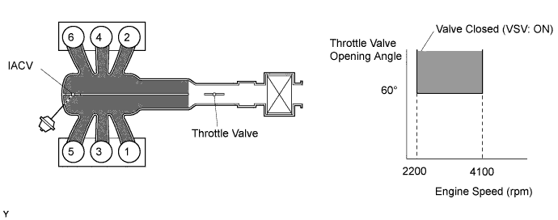
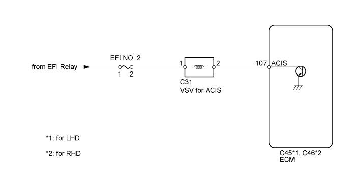
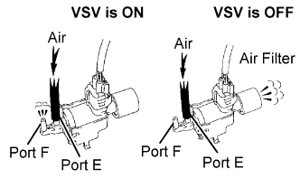
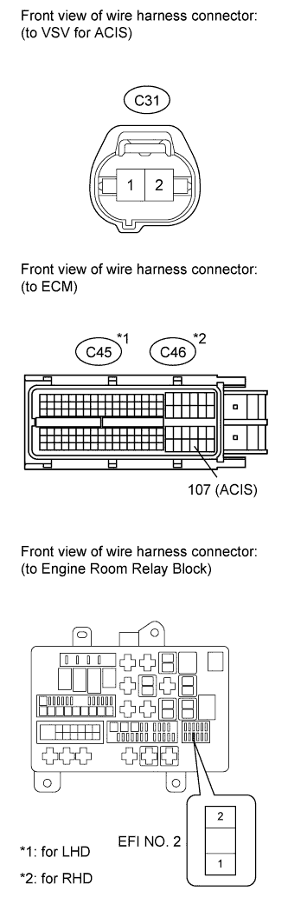
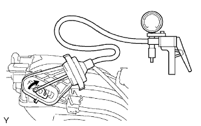

DTC P0660 Intake Manifold Tuning Valve Control Circuit / Open (Bank 1) |

| DTC Code | DTC Detection Condition | Trouble Area |
| P0660 | Conditions (a) and (b) are met for 0.5 sec. or more (2 trip detection logic): (a) The voltage of terminal ACIS of the ECM is low when the VSV is OFF. (b) The engine has started. |
|

| 1.PERFORM ACTIVE TEST USING INTELLIGENT TESTER (OPERATE VSV FOR ACIS) |
 |
Disconnect the vacuum hose.
Connect the intelligent tester to the DLC3.
Turn the engine switch on (IG) and turn the tester on.
Enter the following menus: Powertrain / Engine and ECT / Active Test / Active the VSV for Intake Control. Operate the VSV for ACIS.
Check the VSV operation when it is operated using the intelligent tester.
| Tester Operation | Specified Condition |
| VSV ON | Air from port E flows out through port F |
| VSV OFF | Air from port E flows out through air filter |
| Result | Proceed to |
| NG | A |
| OK | B |
Reconnect the vacuum hose.
|
| ||||
| A | |
| 2.INSPECT VSV FOR ACIS (OPERATION) |
Inspect the VSV for ACIS (Click here).
|
| ||||
| OK | |
| 3.CHECK HARNESS AND CONNECTOR (VSV FOR ACIS - ECM, VSV FOR ACIS - EFI NO. 2 FUSE) |
 |
Check the wire harness and connectors between the VSV for ACIS and ECM.
Disconnect the VSV for ACIS connector.
Disconnect the ECM connector.
Measure the resistance according to the value(s) in the table below.
| Tester Connection | Condition | Specified Condition |
| C31-2 - C45-107 (ACIS) | Always | Below 1 Ω |
| Tester Connection | Condition | Specified Condition |
| C31-2 - C46-107 (ACIS) | Always | Below 1 Ω |
| Tester Connection | Condition | Specified Condition |
| C31-2 or C45-107 (ACIS) - Body ground | Always | 10 kΩ or higher |
| Tester Connection | Condition | Specified Condition |
| C31-2 or C46-107 (ACIS) - Body ground | Always | 10 kΩ or higher |
Check the wire harness between the VSV for ACIS and EFI NO. 2 fuse.
Disconnect the VSV for ACIS connector.
Remove the EFI NO. 2 fuse from the engine room relay block.
Measure the resistance according to the value(s) in the table below.
| Tester Connection | Condition | Specified Condition |
| C31-1 - EFI NO. 2 fuse | Always | Below 1 Ω |
|
| ||||
| OK | |
| 4.CHECK VACUUM HOSE |
Check that the vacuum hose is connected correctly, and that there are no cracks, holes, damage, or looseness.
|
| ||||
| OK | |
| 5.INSPECT INTAKE AIR SURGE TANK (INTAKE AIR CONTROL VALVE) |
 |
Check that the lever moves when a vacuum of 26.6 kPa (200 mmHg, 7.85 in.Hg) is applied with the vacuum gauge on.
Check that the vacuum of 26.6 kPa (200 mmHg, 7.85 in.Hg) is sustained for 1 minute in the above state.
|
| ||||
| OK | ||
| ||